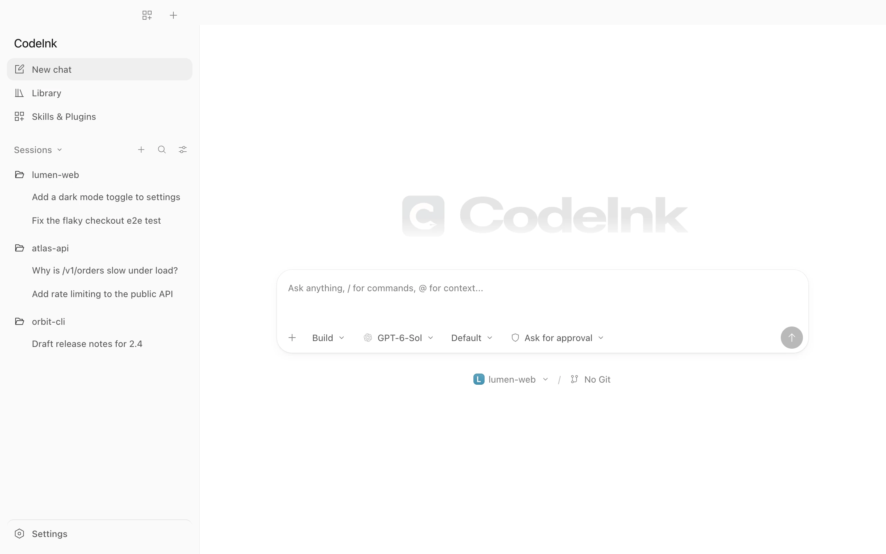
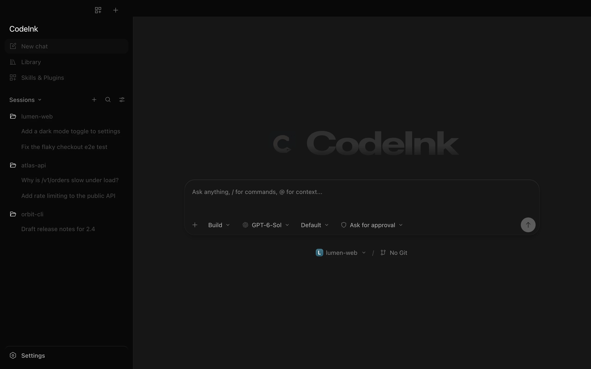
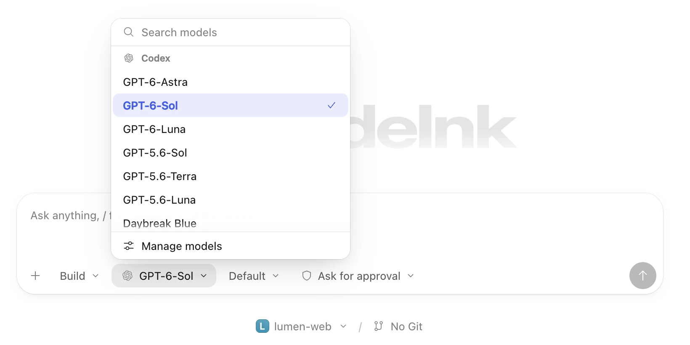
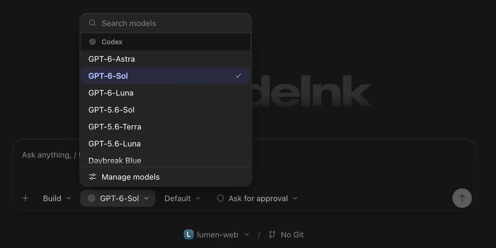

New chat
Start anywhere.
Pick a project, an agent and a model. A chat only appears in your sidebar once you send the first message.


Features
Everything you need to follow, steer and review an agent’s work, and nothing you don’t.
New chat
Pick a project, an agent and a model. A chat only appears in your sidebar once you send the first message.


Models
CodeInk lists the models each agent reports, so you choose per chat instead of per install. Reasoning levels come along too.


Timeline
Finished turns fold their steps under Worked for, with the time it took. The final answer sits right below.


Steps
Reads, searches, edits and commands group into short summaries like “Edited 3 files, ran a command”. Expand any of them for diffs and output.


Access
Ask for approval, Auto review, Plan only or Full access, set per agent and applied to the next message. Fast mode appears only for models that support it.


And more
Edit each agent’s own instruction file, such as AGENTS.md or CLAUDE.md, from Settings.
See how much of your plan is left for Codex and Claude Code, and when it resets.
Browse what every agent has installed, in one place.
Review what the agent changed in your project, right next to the chat.
Run your own commands in the same window as the agent.
Keep sessions in a sidebar, in tabs, or combine projects with tabs.
Copy text across messages, commands and file paths.
Follows your system, or pick one in Settings.
Sessions stay on your computer. Nothing to sign up for.
Download CodeInk and connect the CLI you already use.